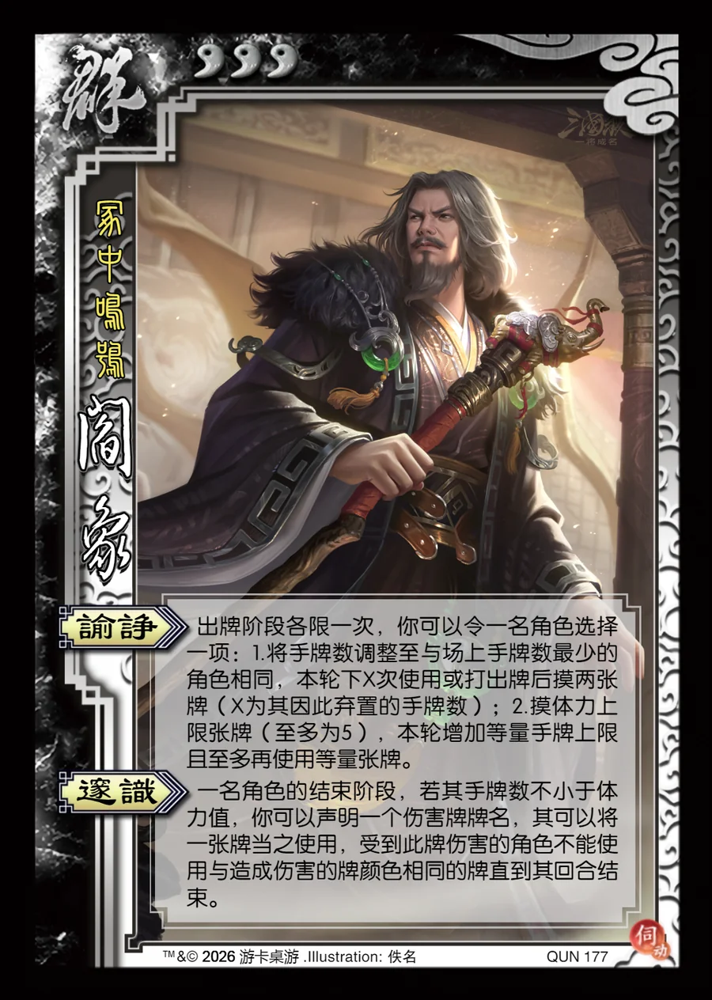

点击卡面查看大图
群
阎象
♥3冢中鸣鸮
谕诤
出牌阶段各限一次，你可以令一名角色选择一项：1.将手牌数调整至与场上手牌数最少的角色相同，本轮下X次使用或打出牌后摸两张牌（X为其因此弃置的手牌数）；2.摸体力上限张牌（至多为5），本轮增加等量手牌上限且至多再使用等量张牌。
邃识
一名角色的结束阶段，若其手牌数不小于体力值，你可以声明一个伤害牌牌名，其可以将一张牌当之使用，受到此牌伤害的角色不能使用与造成伤害的牌颜色相同的牌直到其回合结束。